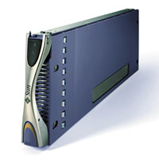
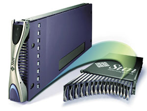

Александр Минаков
Бурное развитие Интернета в конце 1990-х годов привело к развитию и распространению совершенно новой вычислительной инфраструктуры, давшей пользователям доступ к широкому кругу сетевых сервисов. В качестве платы за освобождение пользовательских компьютеров от множества задач, выполнение которых было перенесено на серверы в сети, индустрии потребовались технологии, гарантирующие предсказуемую производительность и надежность соответствующих сетевых сервисов.
Уже давно стала привычной трехуровневая архитектура обработки данных. Идея заключается в разнесении вычислительных мощностей по трем уровням обработки, соответствующим Web-серверам, серверам приложений и серверам баз данных. Для первого уровня целесообразно использовать компактные серверы, поэтому здесь обычно стремятся применять горизонтально масштабируемые системы с форм-фактором 1U в сочетании с балансировщиками нагрузки.
Но возможности быстрого наращивания корпоративных вычислительных мощностей зачастую ограничены. Платформы для сетевых сервисов должны создаваться с расчетом на пиковые рабочие загрузки, а последние иногда носят взрывной характер. И хотя потребность в полной мощности, возможно, возникнет только в сезон праздничных закупок или во время популярной сетевой трансляции, учитывать такую вероятность приходится круглый год. Пренебрегать же этим достаточно опасно - известно, что случается с сайтами, не выдерживающими пиков деловой активности.
Расчет на пиковую нагрузку заставляет создавать колоссальные излишки мощности и чрезмерно увеличивает затраты на инфраструктуру. К тому же стойки, заполненные 1U-серверами, потребляют огромное количество электроэнергии, что повышает затраты на системы бесперебойного питания и охлаждения. Колоссальное усложнение всей системы в целом (в том числе нагромождение соединительных кабелей внутри и между стойками) увеличивает затраты на администрирование.
Применение серверов модульной конструкции (так называемых "лезвий", blades) обещает значительно снизить стоимость необходимого аппаратного обеспечения, уменьшить расходы на инфраструктуру, упростить установку и повысить гибкость конфигурации. "Лезвия" в несколько раз компактнее обычных однопроцессорных серверов высотой 1U, монтируемых в стойку; кроме того, они изначально создавались с учетом необходимости понижать энергопотребление и тепловыделение.
С помощью специального ПО модульные серверы легко перераспределяют свои ресурсы между различными приложениями, что позволяет снизить требования к производительности в пики нагрузок. Кроме того, "лезвия" дают дополнительную экономию, оптимально распределяя между собой ресурсы источников питания, вентиляторов и встроенных маршрутизаторов и тем самым снижая общие затраты на каждый сервер в отдельности. При этом повышается экономическая эффективность таких средств обеспечения надежности, как резервные концентраторы и источники питания. Наконец, объединение в одном корпусе большого числа серверов позволяет снизить стоимость администрирования и уменьшить количество возможных ошибок при соединении.
Модульные компьютеры, как правило, содержат всего одну плату (по размерам сравнимую с сетевым адаптером) и позволяют значительно увеличить плотность заполнения стандартных серверных стоек. В то время как размер обычного современного тонкого сервера составляет как минимум 1U такой стойки, целая группа модульных серверов Blade, включающая от 10 до 16 систем, занимает пространство высотой не более 3U. Очевидно, что данная технология позволит достичь беспрецедентных показателей концентрации вычислительной техники: вместо 40 процессоров в стандартной 72-дюймовой стойке можно устанавливать около 200. Использование модульных серверов позволяет не только на порядок увеличить концентрацию информационных ресурсов, но и изменять ее динамически.
Такие необычайные показатели достигаются благодаря исключению многих компонентов, входящих в состав большинства современных серверов. В случае "лезвий" приоритетные компоненты - это процессоры, память, магнитные носители, сетевое оборудование и устройства ввода-вывода, а не накопители на сменных носителях, USB-порты или порты для подключения клавиатуры и мыши. Такие важные компоненты, как блоки питания и вентиляторы, делаются общими, а длина сетевого кабеля уменьшается до минимума, что позволяет существенно упростить и удешевить систему. Операции, связанные с обработкой данных, осуществляются периферийными устройствами хранения данных.
Корпорация Sun Microsystems (http://www.sun.com) предлагает разделить внедрение модульных серверов на два этапа. Серверы-лезвия первого поколения должны в основном быть ориентированы на приложения, которые пропускают через себя данные без значительной обработки. К таким приложениям относятся, например, Web-серверы и средства обработки сравнительно несложных финансовых транзакций. Модульные серверы первого поколения уже вышли на рынок. Стоит отметить, что они обладают всеми возможностями традиционных серверов в сочетании с пониженным энергопотреблением и повышенной гибкостью. По прогнозам, спрос на подобные изделия будет высок еще достаточно долго, что позволит этому рынку сильно развиться. По всей вероятности, появятся новые стандартные форм-факторы, которые позволят уменьшить занимаемое серверами место в несколько раз по сравнению с сегодняшними серверами высотой 1U. Для соединения серверов будет применяться сетевой интерфейс, скажем, Gigabit Ethernet.
Ожидается, что к началу массового внедрения модульных серверов в горизонтально масштабируемых системах уже будут разработаны серверы-лезвия второго поколения. Они смогут взять на себя всю сложную обработку данных, которая обуславливает совсем иные требования к производительности серверов. Здесь также требуется высокая надежность, высокая производительность подсистем ввода-вывода и возможность гибкого наращивания ресурсов по мере роста организации. Новые поколения модульных серверов будут включать как однопроцессорные конфигурации для "пропускания" потоков данных, так и многопроцессорные конфигурации для обработки транзакций.
Системы на базе модульных серверов будут представлять собой гибко модифицируемый комплекс вычислительных и сетевых ресурсов, а также ресурсов хранения. Мощности будут легко наращиваться по мере изменения требований бизнеса. Чтобы обеспечить максимальную эффективность этих систем, необходимо правильно выбрать оптимальный форм-фактор и стандарт соединительных интерфейсов. Реализуя свою концепцию, Sun Microsystems ведет совместные разработки новых стандартов в области форм-факторов и соединительных интерфейсов.
Архитектура и решения на ее базе
Серверная платформа Sun Fire Blade Server, по мнению ее разработчиков, позволит организациям предоставлять сервисы с высоким уровнем готовности и безопасности, а также консолидировать администрирование систем и снизить стоимость эксплуатации. Применение серверов новой серии обещает значительно понизить стоимость необходимого аппаратного обеспечения за счет уменьшения расходов на инфраструктуру, а также увеличения гибкости конфигурации и простоты установки.
Использованная в решении многослойная структура администрирования предоставляет компаниям различные уровни управления, что упрощает конфигурирование систем и управление ресурсами. Архитектура Sun Fire Blade Server позволяет значительно увеличить плотность размещения вычислительных систем в центрах данных (datacenter), а также повысить показатели производительности. Это значительно снижает затраты, связанные с внедрением систем и управлением ими, а также с использованием приложений и сервисов. Данная архитектура базируется на единой, интегрированной платформе и отраслевых стандартах.
Независимые разработчики предлагают защищенные, простые в инсталляции решения для новых серверов, работающие как на платформе Sun Solaris, так и под управлением ОС с открытым кодом Sun Linux. В сочетании с набором ПО Sun ONE для предоставления Web-услуг новая платформа представляет собой законченное решение для самого широкого спектра организаций и предприятий.
Sun Fire B100 Blade
Сервер Sun Fire B100 Blade Server размещается в шасси Sun Fire B1600 Blade Intelligent Shelf (серверная полка высотой 3U c 16 слотами). Шасси содержит встроенные сетевые соединения Gigabit Ethernet, а все критически важные компоненты дублированы. Решение позволяет в пять раз увеличить концентрацию вычислительной техники по сравнению с обычным однопроцессорным сервером, занимающим в высоту одну монтажную единицу.
Платформа оборудована интегрированным коммутатором, предусмотрена поддержка до двух коммутаторов и системных контроллеров. Sun Fire Blade может включать модульные серверы на базе архитектуры SPARC и x86, а также средства оптимального распределения нагрузки, что повышает гибкость и простоту адаптации платформы. Кроме того, предусмотрена работа системы удаленного администрирования (Lights-Out Management, LOM).
Для модулей BL100 в качестве базового процессора используется UltraSPARC IIi с тактовой частотой 650 МГц. Объем основной памяти может составлять от 512 Мбайт до 2 Гбайт, система оборудуется жестким диском емкостью 30 Гбайт с интерфейсом ATA, а также двумя портами Gigabit Ethernet. Среднее потребление энергии составляет 18 Вт на один модульный сервер.
|  | Модуль Sun Fire B100 Blade.
|
Sun Fire x86 Blade Server
Ожидается, что готовящиеся к выпуску серверы-лезвия Sun Fire x86 Blade Server будут построены на процессорах AMD Athlon XP-M с тактовой частотой 1,2 и 1,4 ГГц, первоначально разработанных для применения в ноутбуках. Представители Sun объясняют выбор процессоров AMD их выигрышными характеристиками, в частности "наилучшим балансом производительности, плотности, энергопотребления и теплоотдачи". Разработчики рассчитывают, что шасси Sun Fire B1600, вмещающее 16 "лезвий" на процессорах AMD, будет потреблять менее 1 кВт. Заметим, что потребляемая мощность процессоров Athlon XP-M составляет 30-40 Вт, а максимальное энергопотребление UltraSparc IIi - всего 18 Вт. Независимые источники полагают, что выбор х86-процессора еще не окончательный и корпорация продолжает прорабатывать вопрос использования в своих серверах продукции Intel, Transmeta и VIA Technologies. Серверы Sun Fire x86 Blade Server должны быть выпущены во второй половине года.
| Шасси Sun Fire B1600 Intelligent Shelf.
|
Балансировщик нагрузки
Сервер Sun Fire Content Load Balancing Blade реализует на платформе Sun Fire Blade фирменные механизмы распределения нагрузки. Этот высокопроизводительный модульный сервер позволяет разгрузить процессоры вычислительного центра, выполняя все задачи, связанные с управлением системным трафиком. Content Load Balancing Blade помогает повысить уровни обслуживания и эффективность использования ресурсов системы, одновременно снижая сложность и стоимость средств управления.
Для распределения трафика данный продукт в числе прочего использует механизмы URL, CGI и cookies, а также алгоритмы кругового обслуживания. Организация непосредственного взаимодействия сервера и клиента способствует уменьшению времени отклика и более эффективному использованию системных ресурсов.
Content Load Balancing Blade в первую очередь предназначается для защищенных, горизонтально масштабируемых серверных приложений. В числе таких приложений можно назвать Web-хостинг, кэширование, непрерывное предоставление мультимедийных ресурсов, а также Web-сервисы, средства обмена сообщениями, информационные порталы, финансовые приложения - Интернет-банкинг, сетевую реализацию процессов займа, биржевых торгов и т. п.
Интеллектуальное шасси и дисковая память
Шасси Sun Fire B1600 Blade Intelligent Shelf содержит 16 слотов и занимает в высоту 3 монтажные единицы. Ее конструкция предусматривает встроенный интерфейс Gigabit Ethernet и включает дублирование всех критических компонентов. B1600 Blade Intelligent Shelf поддерживает до двух коммутаторов и системных контроллеров. Всего в стойке высотой 42U может разместиться до 224 модульных серверов.
|  | В одном шасси размещается до 16 модульных серверов.
|
Система хранения Sun StorEdge 3310 NAS оптимизирована для платформы Sun Fire Blade. В компактном корпусе высотой 2U размещается до 12 дисков, которые обеспечивают общую емкость хранилища до 824 Гбайт.
Модульные серверы и N1
Системы на базе модульных серверов по существу представляют собой миниатюрную версию сложных и дорогих вычислительных центров, оснащаемых обычно мощными компьютерами и содержащих наиболее ценные данные предприятий. Здесь можно вспомнить о предложенной Sun Microsystems концепции экономичных центров данных, получившей название N1. Концепция предусматривает получение максимальной отдачи от вычислительных ресурсов при минимальных затратах на администрирование.
Свойства модульных серверов делают эти системы идеальной технологией для первого этапа реализации плана N1. По словам Стива Маккея, вице-президента Sun Microsystems, ответственного за проект N1, модульные серверы - это больше чем просто компьютер; на самом деле они "ближе к микрокосму вычислительного центра".
Напомним, что проект N1 занимает центральное место в усилиях компании по сокращению расходов заказчиков, эксплуатирующих нашпигованные оборудованием вычислительные центры. Кроме того, этот проект призван убедить заказчиков в том, что Sun опережает конкурентов как в технологии, так и в видении перспектив отрасли. Предполагается, что N1 позволит заказчикам решать вычислительные задачи с помощью больших групп серверов, систем хранения данных и сетевого оборудования, не беспокоясь о том, какое именно устройство будет использоваться.
Вообще говоря, конечная цель N1 - повышение степени "утилизации" каждой единицы оборудования, которое сегодня в значительной мере простаивает. Проект N1 ориентирован на виртуализацию - отделение вычислительной задачи от конкретной аппаратуры, на которой она решается. Это позволяет проводить множество разнообразных вычислений, используя пул компьютерного оборудования вместо отдельных систем. Не случайно Sun приобрела две компании, специализирующиеся на виртуализации, а именно Terraspring и Pirus Networks. Pirus продает оборудование и ПО, виртуализирующее системы хранения данных разных производителей; у Terraspring есть ПО, которое "наблюдает" за всем оборудованием вычислительного центра и позволяет администраторам выбирать и подготавливать системы к новым задачам.
На первых этапах реализации проекта N1 заказчики получат модульные серверы и сервисы Sun Microsystems, решая задачу виртуализации. Второй этап, запланированный на вторую половину этого года, будет нацелен на расширение спектра поддерживаемого оборудования. Заключительный этап (намечен на 2004 г.) будет посвящен автоматизации на базе правил. К примеру, заказчик сможет настроить систему на приоритетную обработку биллинговых задач в конце месяца, когда этим задачам необходимо больше ресурсов.
N1 Provisioning Server 3.0 Blades Edition
Программный пакет N1 Provisioning Server 3.0 Blades Edition представляет собой легко масштабируемую среду управления как отдельными модульными специализированными серверами Sun Fire Blade, так и стойками с набором таких систем. Данное решение предназначено для сети с управлением по дополнительному каналу. Оно позволит заказчику автоматизировать и ускорить процессы проектирования, конфигурирования, обслуживания и масштабирования систем модульных серверов. В пакете предусмотрены гибкие механизмы работы большого числа пользователей с множеством распределенных в целях безопасности серверных систем. Такие механизмы упрощают операции горячего внедрения, масштабирования, реконфигурирования и удаления ресурсов. N1 Provisioning Server 3.0 Blades Edition представлен двумя программными комплексами - N1 Blades Starter Pack и N1 Blades System. Вот основные функции и особенности данного программного пакета:
- автоматизация конфигурирования и внедрения серверов, межсетевых экранов, средств распределения нагрузки в системе и сетевых ресурсов;
- управление платформой модульных серверов как единой системой благодаря виртуализации ресурсов;
- использование преимуществ технологии N1 на платформе модульных серверов;
- внедрение системы серверов в считанные часы;
- использование базы данных внутренних событий в системе, дающей в числе прочего возможность интеграции с биллинговыми системами и средствами управления имеющимися ресурсами.
Операционные системы
Один из базовых принципов организации вычислений с помощью модульных серверов - предоставление открытой вычислительной среды, причем это касается как аппаратной платформы, так и программного стека. Необходимо обеспечить заказчикам возможность выбирать программы в зависимости от их требований к приобретаемым услугам. Как считают в Sun Microsystems, такую возможность обеспечивают ОС Solaris и Linux.
Среди надежных, проверенных, масштабируемых ОС одно из первых мест по праву занимает Solaris - возможно, наиболее удачное воплощение Unix. Способность Solaris без проблем переходить от однопроцессорной системы к огромным вычислительным центрам делает ее хорошим кандидатом на использование в комплексах на базе модульных серверов.
Для первых поколений подобных серверов, призванных выполнять различные приложения на границе сети, критично обеспечение интегрируемости содержимого сети и защиты сервисов от разрушительных воздействий. В этой связи весомым аргументом в пользу Solaris оказывается ее заслуженная репутация высокозащищенной среды.
Еще одно преимущество Solaris - наличие нескольких тысяч надежных неоднократно протестированных программных решений на платформе Sun. Спектр этих решений простирается от популярных офисных приложений до информационных и финансово-учетных систем. Все они совместимы с Linux - это позволит заказчикам использовать все многообразие существующих приложений в среде модульных серверов без каких-либо изменений.
В последнее время Sun Microsystems и другие ведущие ИТ-компании изучают связь между операционной средой и механизмами управления системой, используя совершенно новый подход, получивший название "сублимации". Это новый этап развития технологий управления, следующий за этапом автоматизации процессов. Суть сублимации в том, что основные процедуры системного управления не только автоматизируются, но и скрываются от администратора. Например, на сегодняшний день установка ПО в большинстве информационных структур проводится вручную и остается очень трудоемкой процедурой. В частности, если решение бизнес-задач требует использования Solaris, администратору в каждом конкретном случае придется заново устанавливать ОС на соответствующую машину. Расширенные средства управления позволяют выполнить процесс установки всего один раз, а затем просто разместить операционную среду во всех системах, подключенных к сети.
Благодаря подобной технологии облегчается и работа администратора с сетевыми ресурсами. Процесс подключения дополнительных систем автоматизируется - они просто инкапсулируются в общую структуру и сразу оказываются готовыми к эксплуатации. Загрузка систем автоматически и без каких-либо сбоев проводится с одной-единственной машины. Добавление нового ПО, распределение ресурсов и мониторинг загруженности системы с помощью описанного механизма происходят автоматически. В то же время события в системе могут отслеживаться как автоматически, так и вручную, в зависимости от установленной политики управления.
Развитие технологий ввода-вывода
Что касается архитектуры ввода-вывода для модульных платформ, то Sun Microsystems, имея большой опыт в области, связанной с вычислениями в открытых компьютерных сетях, делает ставку на технологии Gigabit Ethernet. Пропускная способность в сетях данного типа выше, чем в сетях Fast Ethernet. Еще одно преимущество Gigabit Ethernet заключается в низком уровне латентности. Благодаря этому серверы (например, модульные) в таких системах работают с весьма высокой производительностью, что позволяет быстрее окупить вложенные в них средства.
Sun и некоторые другие ведущие поставщики программных и аппаратных решений выделяют основные требования к разработке общей спецификации ввода-вывода, которая необходима для утверждения единого стандарта коммутируемых устройств, основанного на использовании каналов. Лидеры отрасли вкладывают свой опыт в разработку новой, по-настоящему эффективной архитектуры ввода-вывода, следующей за сегодняшними решениями, такими, как PCI и Compact PCI.
Эта новая технология известна как InfiniBand. В ее основе лежит не разделяемая архитектура "загрузки с запоминанием", а использование канальных соединений типа "точка-точка". Благодаря многосвязным соединениям и согласованиям скоростей взаимодействия значительно увеличивается производительность. Кроме того, данная технология позволяет осуществлять как внутреннее межпроцессорное взаимодействие, так и обмен данными между серверами, сетевой периферией и системами хранения.
Дизайн InfiniBand позволит внедрять в систему процессоры, память и устройства хранения данных независимо друг от друга, обеспечивая оптимальное внутрисистемное взаимодействие. В результате достигается эффективное взаимодействие типа "точка-точка" или "сервер-сервер" с одновременным снижением уровня латентности.
К преимуществам InfiniBand помимо высокого уровня производительности относятся встроенные возможности обеспечения информационной безопасности и простота обновления. Кроме того, данная технология недорога в обслуживании, она предусматривает выбор различных уровней готовности и доступности. Масштабируемость InfiniBand достигается за счет низкого уровня латентности предложенной технологии и ее физического деления на модули.
Заключение
На сегодняшний день практически все ИТ-компании - от провайдеров Интернет-услуг до предприятий, приобретающих подобные сервисы, - заинтересованы в поиске новых стратегий динамического масштабирования сервисов и ресурсов. И это основная причина, по которой модульные серверы заняли видное место в долгосрочных стратегиях лидеров индустрии. Модульные серверы рассматриваются этими компаниями как средство повышения концентрации вычислительной мощности и как инструмент упрощения системного и сервисного управления, быстрого и равномерного расширения системы, улучшения характеристик производительности и отказоустойчивости, предоставления гибких методов обеспечения роста и изменения системы.
Но модульные серверы смогут занять уготованное им достойное положение только в том случае, если они будут частью единого прозрачного технологического решения. Такое решение должно включать проверенные средства сетевого управления, запускаемые в стабильной и устойчивой операционной среде. При этом необходимо объединение промышленных стандартов и сетевых протоколов нового поколения, а также надежных решений в области хранения данных, способных справиться с информационным бумом.